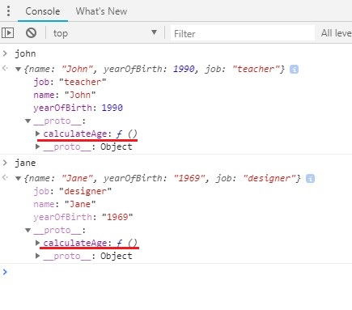

Section 5: Advanced JavaScript: Objects and Functions
Prototype chain
Object.create()

CLOSURES
Czym jest ,,closure” (domknięcie) w JavaScript?
JavaScript: Closures - czyli zrozumieć i wykorzystać domknięcia